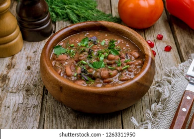

Lobio, added from dif branch

Description
Using a potato masher, mash the beans until about
three-quarters of them are mashed, adding more of your
reserved cooking liquid as needed.
Remember,
you’re going for the consistency of a thick stew
but if you would rather make it thinner and go for more of a
Georgian bean soup, then just add more liquid.
Turn off heat. stir in remaining cilantro, and serve.
Ingredients
- 400 grams (1lb) dried red or pinto beans
- 1-2 teaspoons salt
- 5 cloves garlic, minced
- 1/4 teaspoon cayenne pepper
- 1/2 large yellow onion
Steps
- place the beans into a pot, pour water into it,
and boil it over a medium flame until the beans are quite soft
- Then pour the boiled water out of the pot
- mashed beans to achieve the thickness you desire and stir together
- cover the pot with a lid
- add the tkemali and bring it to the boil once more, then take it off the heat.